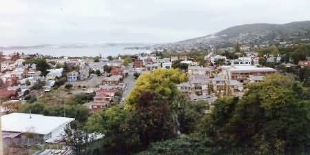
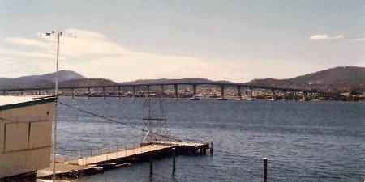
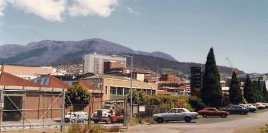
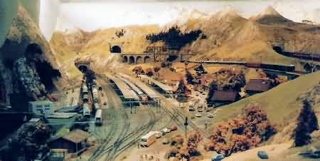
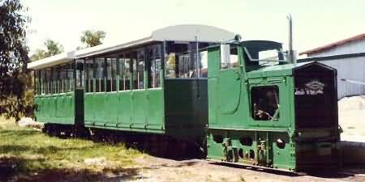

NAVIGATION
TOP of Page
MAIN Page
HOME Page
PREV Page
NEXT Page
ON THIS PAGE
The City of Hobart
Around Hobart
Day Trips South
TASMANIAN TOUR
North West
Central North
North East
East Coast
South East
South West
Highlands
West Coast
North Coast
|
The City of Hobart
Hobart, population 170,000, is found at the mouth of the Derwent River and the foot
of Mt Wellington (1,270m). It is the second oldest state capital after Sydney. The city
centre still retains its 1881 layout developed by Governor Macquarie, and many of
the buildings are original thanks to the lower rate of redevelopment. The first stop should
be the Tasmanian Government Tourist Bureau at 80 Elizabeth Street, to find what this
fine city has to offer.

Hobart South, from the foothills of Mt Wellington
Parliament House (1835-1840), with woodwork of NSW cedar, was originally built as a
bonded store with convict stonework. Parliament began with meetings of the Legislative
Council in 1856, and in 1939 a wing was built for the House of Assembly. The Town Hall
(1864) is on the site of Governor Collins first residence. The architect of this stately
Italianate building was the prolific Henry Hunter. Anglesea Barracks (1814), the oldest
military establishment in Australia, still mounts a pre 1774 cannon.
TOP
MAIN
HOME
PREV
NEXT

Hobart Bridge, with the missing span on the centre right
Scots Church (1830) has fine detail and heavy battlements. The small brick building
in the grounds was one of the earliest churches in 1824. St Davids Cathedral (1868)
is built in the Gothic Revival style from Oatlands sandstone. Altar vessels include 5 gold
pieces presented by George III in 1803.St Davids Park, the original cemetery, contains
the grave of James Kelly, who in 1815 circumnavigated Tasmania.St Marys Cathedral
(1866) was rebuilt due to faulty foundations and contained St Virgillus, the first
Catholic church in Tasmania.The Synagogue (1843) is the oldest in Australia and the
first in the world to be built in an Egyptian style.
Battery Point (1818) is a historical village 1km Southeast of the city centre.
Arthurs Circus has a village green surrounded by a row of tiny sailors houses.
Salamanca Place, now an open air market/restaurant area contains the oldest
terrace of sandstone warehouses in Australia.Van Diemens Land Folk Museum
and the Maritime Museum are nearby.
TOP
MAIN
HOME
PREV
NEXT
Around Hobart
The Botanical Gardens(1818) in the Queens Domain are 2km Northeast of the city centre.
They feature a conservatory, a greenhouse and a fernhouse with exotic orchids. Walkways over
the 13.5ha site feature convict built walls, flower beds and ponds. The Museum and Art
Gallery is on the corner of Argyle and Macquarie Streets. Upon stepping inside you are
greeted by a giant Muttaburrasaurus skeleton. The ground floor displays gemstones and
Tasmanian wildlife, plus recreations of prehistoric marsupials recovered from the north coast
swamps. When last there I saw 'Eric', the 2m long opalised Pliosaur. Upstairs are the
Antarctic and convict exhibits. All are well worth seeing.
The Art Gallery is of a medium size and contains many pictures of colonial scenes.
Across Davey Street is the Constitution Dock, where the Sydney-Hobart Race
fleet ties up. The Cat and Fiddle Arcade has a pantomine carried out by the clock on the
hour. Look around Bathurst, Liverpool and Macquarie Streets for shops; the department stores
have displays of beautiful handmade furniture. Rent-a-Bug is in Murray Street.
Cascades Brewery 3km west of the city has tours through the home of Cascade beer.
Head further inland through Fern Tree and a return trip to the top of Mt
Wellington. Be sure to take warm clothing.

Hobart North, with Mt Wellington in the background
TOP
MAIN
HOME
PREV
NEXT
Head south to the restaurants and arts centres of Sandy Bay. Wrest Point Casino
(1973) was Australias first legal casino and contains a revolving restaurant in the tower.
The smorgasbord lunches are affordable, with excellent views over Hobart. Further south in
Taroona are the tourist traps of the Model Tudor Village and the Shot Tower.
The Tasmanian Transport Museum in Glenorchy (phone 002-341-632) contains seven
locomotives and is open on weekends 1300-1700hrs. In Claremont see both the Cadbury
Schweppes Factory, with its tour and three completely restored trains; and the incredible
hand built O gauge models of the gigantic Alpenrail Swiss mountain layout at 82
Abbotsfield Road (phone (03)6249-3748).

Alpenrail - Swiss Railway models
TOP
MAIN
HOME
PREV
NEXT
Day Trips South of Hobart
Bruny Island is across the ferry from Kettering. Get there via Kingston
where the Australian Antarctic Research HQ has a display open on weekdays. On the
island half the roads are dirt, but the scenery is interesting. Places of interest include
Captain Cooks Landing Place, Memorials To Early Navigators and Bligh
Museum. Have lunch in the Alonnah Pub at Lunawanna. Fairy Penguins come
ashore along the isthmus.
Return via Cygnet and see the Talune Woodturning and Wildlife Park. The Huon
Valley is a worthwhile diversion down the Huon Highway, with its pleasant countryside of
orchards and good restaurants. Ranelagh Motor Museum contains 40 cars including a 1934
Hudson Terraplane. Geeveston is the administrative centre for local government which
encompasses Macquarie Island 1,300km to the south. The 58 tonne log in the town square
contains 567 cu metres of timber.
Timber from surrounding countryside is pelletised at nearby Port Huon for paper
production in Sydney. Turn off at Geeveston for a 50km detour over the Arne River road
into the glaciated Hartz Mountains National Park with the Tahune Forest Reserve
and Waratah Lookout. Dover contains Caseys Steam Museum, with its
collection of 20 restored engines that steam up on Thursday and Sunday. The local hotel is the
most southern in Australia. Three islands in the bay are named Faith, Hope and Charity.
Go inland from the collection of fishing shacks at Southport to the Hastings
Caves and the 28C Thermal Pool. Past Lune River is the 2 foot gauge Ida
Bay Railway. Either a Hunslet 0-4-2 or a Hornby Ruston diesel locomotive takes you on a
6.8km bush trip from the limestone quarry to a crumbling wharf. Cockle Creek 10km
south is as far south as you can drive in Australia.

The Ida Bay Railway
TOP
MAIN
HOME
PREV
NEXT
|